The KRONOS Re Dashboard is the primary interface for the AI-native Bermuda reinsurance sidecar platform. It provides actuaries, CIOs, risk officers, and regulators with real-time analytics, AI-assisted workflow management, and regulatory reporting.

The KRONOS AI assistant helps users build and manage actuarial workflows through natural conversation:
Every AI-proposed workflow requires human approval before execution:
Real-time asset-liability management analytics:
Regulatory capital computation and stress testing:
AI-drafted hedge recommendations with human CIO approval:
Automated report generation with human actuary sign-off:
| Component | Technology |
|---|---|
| Frontend | Plotly Dash + Bootstrap + dash-ag-grid |
| API | FastAPI (mounted on same server) |
| AI Engine | Anthropic Claude SDK (claude-sonnet-4-6) |
| Process Manager | ChatHub (JupyterHub-style) |
| Authentication | OAuth2/OIDC |
| Data | DuckLake (DuckDB + Parquet on S3) |
| Service | Port | URL |
|---|---|---|
| Dashboard + API | 8050 | http://localhost:8050 |
| ChatHub | 8060 | Internal only |
| UserProcesses | 9100-9999 | Internal only |
# Start all services (requires Redis)
./scripts/aadhya/start.sh start
# Dashboard available at http://localhost:8050
# API docs at http://localhost:8050/api/docs
| Page | URL | Audience |
|---|---|---|
| AI Chatbot | /chatbot |
All users |
| Workflow Viewer | /workflow?id={id} |
Actuaries, CIO |
| Solvency Overview | / |
PE partners, CRO |
| Liability | /liability |
Actuaries |
| ALM | /alm |
ALM committee |
| Trading | /trading |
CIO, traders |
| Risk | /risk |
CRO, BMA |
| Reports | /reports |
Regulators |
All endpoints are under /api/v1/kronos. Key endpoint groups:
/chatbot — AI conversation and workflow management/approvals — Approval creation, revocation, and audit trail/alm — ALM snapshots and analytics/risk — BSCR and stress testing/trading — Hedge recommendations and positions/reporting — Report generation and retrieval/liability — Cash flow projections/ingestion — Census data uploadAuthentication via OAuth2 bearer token or session cookie.